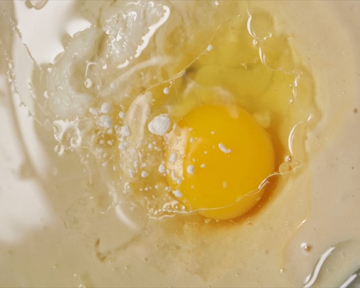
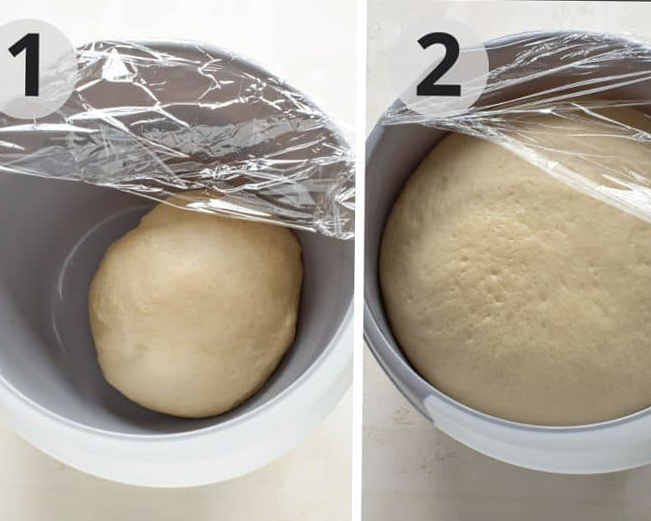
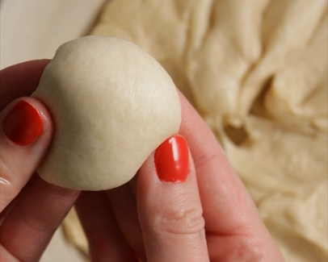
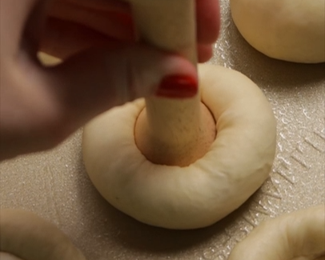
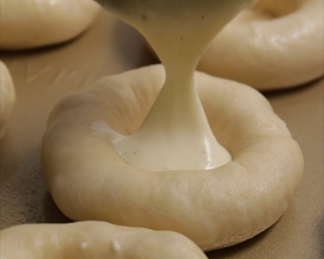
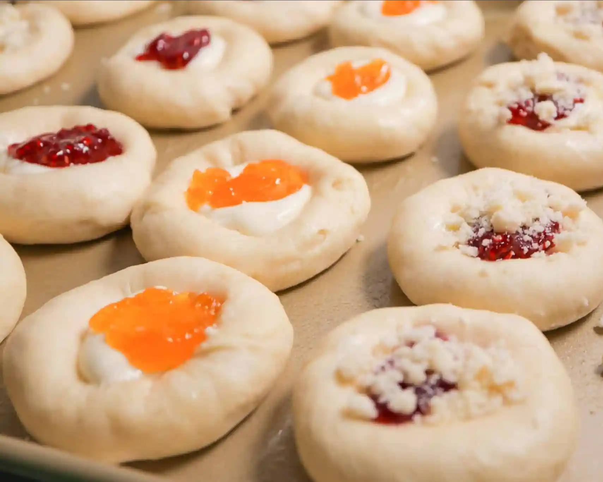

Ingredients
Instructions
Prep the tangzhong
- Combine the tangzhong ingredients in a small saucepan over medium heat. Whisk and heat until it becomes a thick paste. Set aside.

Start the dough
- In the bowl of a stand mixer, thoroughly whisk together 2 cups of the flour (240g), instant yeast, sugar and salt.
- Warm milk to 100-110°F.
- Add the paddle attachment to the mixer and stream in the warm milk while mixing on the lowest setting. When combined, turn the mixer off and let sit for 5-10 minutes to activate the yeast.
- Add the tangzhong, oil and egg and the rest of the flour (3 cups or 360g). Switch to the dough hook. Slowly add the softened butter 1 tablespoon at a time until incorporated. 
- Continue mixing. If the dough looks too wet, add more flour a little at a time.
Knead the dough
- Mix with the dough hook on medium speed for 6-8 minutes. When the dough starts looking smooth, conduct the windowpane test. Pinch off a small bit of dough. Slowly pull the dough out from the center with your fingers. If the dough is ready, you will be able to stretch it until it's thin and translucent like a windowpane. If the dough tears, it's not ready yet. Beat for 1 more minute, and test again.
- When the dough passes the test, transfer to a large greased bowl and cover. Let rise until doubled, about 1 hour. 
Make the posipka (streusel topping)
- Whisk together flour, sugar and salt. Cut butter into dry whisked ingredients. You want a fine crumb. Set aside.
Make the cream cheese filling
- Beat the cream cheese and sugar until light and fluffy. Add egg and vanilla, beating until combined. Set aside.
Shape the kolaches
- Pinch off egg size sections of dough (about 40g each), roll into a ball and place on a greased baking sheet. Cover and let rise for about 30 minutes. 
- Preheat the oven to 375°F.
- Press down centers with thumbs or a tamper. Fill with cream cheese and/or jams. Top with posipka or leave bare to glaze later. Rise 20 minutes before baking 15-18 minutes or until lightly golden.
- Brush edges with melted butter.   